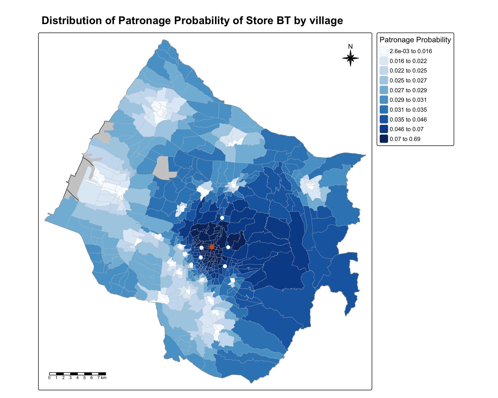
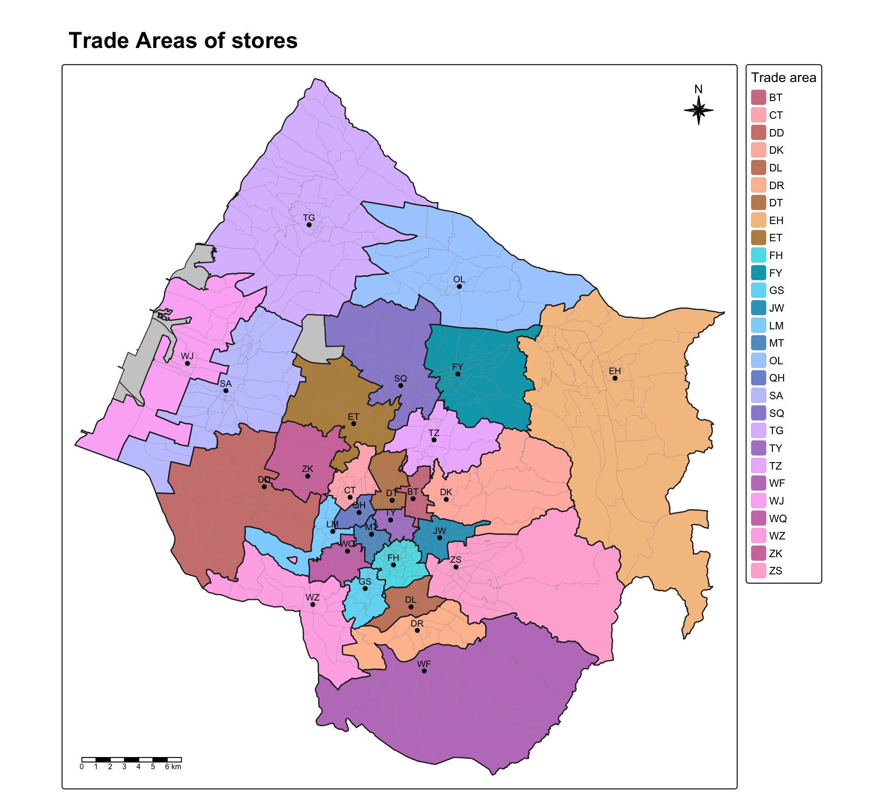

pacman::p_load(sf, tidyverse, MCI, tmap, ggstatsplot)In-class Exercise 8
Market Area Analysis with the Huff Model
1 Overview
This in-class exercise follows Lesson 8. It delineates the trade areas of 28 fast-food stores in Taichung City with the Huff model, using the MCI package. In class, the prof worked through a revised version of chapter 18 of the book.
2 Getting Started
3 Importing Data
3.1 Importing geospatial data
stores <- st_read(
dsn = "data/geospatial",
layer = "STORES_TC")
town <- st_read(
dsn = "data/geospatial",
layer = "TOWN_TC")
village <- st_read(
dsn = "data/geospatial",
layer = "VILLAGE_TC")3.2 Importing aspatial data
pop2019 <- read_csv(
"data/aspatial/pop2019.csv")
store_sales <- read_csv(
"data/aspatial/Store_sales_data.csv")4 Data Preparation
4.1 Aggregating store sales
The code chunk below aggregates the store sales data by store code.
store_sales_aggre <- store_sales %>%
group_by(`Store Code`) %>%
summarise(
"Total_Bill" = sum(Bills, na.rm = TRUE),
"Total_Sales" = sum(Amount, na.rm = TRUE))4.2 Relational join
In the code chunk below, left_join() of dplyr appends the sales totals to the stores, mutate() creates a new field called Store_size, and st_drop_geometry() drops the geometry.
stores_tidied <- stores %>%
left_join(store_sales_aggre,
by = join_by(
Store_CD == `Store Code`)) %>%
mutate(Store_size = 1) %>%
st_drop_geometry()Next, summary() is used to check if there are any missing values in the data.frame.
summary(stores_tidied) Store_Name Store_Addr Store_CD Total_Bill
Length :28 Length : 28 Length :28 Min. : 1767
N.unique :28 N.unique : 28 N.unique :28 1st Qu.: 5698
N.blank : 0 N.blank : 0 N.blank : 0 Median : 8634
Min.nchar: 2 Min.nchar: 43 Min.nchar: 2 Mean : 8021
Max.nchar:28 Max.nchar:100 Max.nchar: 2 3rd Qu.:10349
Max. :14468
Total_Sales Store_size
Min. :1475963 Min. :1
1st Qu.:4044821 1st Qu.:1
Median :6116336 Median :1
Mean :5542852 Mean :1
3rd Qu.:6959911 3rd Qu.:1
Max. :8234234 Max. :1
NoteLearning diary
This is where the prof changed the book. The result goes into a new object, stores_tidied, so stores keeps its geometry for mapping later. Every store now gets a size of 1 instead of 100. Since all stores share the same value, it cancels out of the Huff formula either way, so the probabilities do not change. stores_tidied has 28 rows and 6 columns, with no geometry.
4.3 Tidying pop2019 data.frame
Before appending pop2019 to the village sf data.frame, it is wise to check that the values in the join fields are the same.
glimpse(pop2019)Rows: 625
Columns: 11
$ COUNTY_ID <dbl> 66000, 66000, 66000, 66000, 66000, 66000, 66000, 66000, 6600…
$ COUNTY <chr> "臺中市", "臺中市", "臺中市", "臺中市", "臺中市", "臺中市", "臺中市", "臺中市", "臺中市…
$ TOWN_ID <dbl> 66000110, 66000110, 66000110, 66000110, 66000110, 66000110, …
$ TOWN <chr> "大甲區", "大甲區", "大甲區", "大甲區", "大甲區", "大甲區", "大甲區", "大甲區", "大甲區…
$ V_ID <chr> "66000110-002", "66000110-009", "66000110-021", "66000110-00…
$ VILLAGE <chr> "大甲里", "中山里", "太白里", "孔門里", "文曲里", "文武里", "日南里", "平安里", "江南里…
$ H_CNT <dbl> 454, 1781, 406, 383, 355, 2071, 2039, 785, 461, 559, 769, 80…
$ P_CNT <dbl> 1255, 5252, 1471, 1001, 1264, 6687, 6739, 2642, 1618, 1977, …
$ M_CNT <dbl> 626, 2533, 758, 538, 640, 3244, 3406, 1310, 838, 983, 1273, …
$ F_CNT <dbl> 629, 2719, 713, 463, 624, 3443, 3333, 1332, 780, 994, 1239, …
$ INFO_TIME <chr> "108Y12M", "108Y12M", "108Y12M", "108Y12M", "108Y12M", "108Y…glimpse(village)Rows: 622
Columns: 11
$ VILLCODE <chr> "66000110029", "66000120001", "66000120002", "66000120003",…
$ COUNTYNAME <chr> "臺中市", "臺中市", "臺中市", "臺中市", "臺中市", "臺中市", "臺中市", "臺中市", "臺中…
$ TOWNNAME <chr> "大甲區", "清水區", "清水區", "清水區", "清水區", "清水區", "清水區", "清水區", "清水…
$ VILLNAME <chr> "建興里", "鰲峰里", "靈泉里", "清水里", "文昌里", "南寧里", "西寧里", "北寧里", "中興…
$ VILLENG <chr> "Jianxing Vil.", "Aofeng Vil.", "Lingquan Vil.", "Qingshui …
$ COUNTYID <chr> "B", "B", "B", "B", "B", "B", "B", "B", "B", "B", "B", "B",…
$ COUNTYCODE <chr> "66000", "66000", "66000", "66000", "66000", "66000", "6600…
$ TOWNID <chr> "B11", "B12", "B12", "B12", "B12", "B12", "B12", "B12", "B1…
$ TOWNCODE <chr> "66000110", "66000120", "66000120", "66000120", "66000120",…
$ NOTE <chr> NA, NA, NA, NA, NA, NA, NA, NA, NA, NA, NA, NA, NA, NA, NA,…
$ geometry <MULTIPOLYGON [m]> MULTIPOLYGON (((211953.9 27..., MULTIPOLYGON (…The village ID, V_ID, in pop2019 does not have the same structure as VILLCODE in the village sf data.frame. The code chunk below removes the “-” sign from the values.
pop2019 <- pop2019 %>%
mutate(V_ID = str_remove_all(
V_ID, "-"))Now, left_join() of dplyr appends the data in pop2019 onto the village sf data.frame.
village <- village %>%
left_join(pop2019,
by = join_by(
VILLCODE == V_ID))4.4 Check for missing or zero values
The code chunk below is used to check for any records with missing values.
summary(village) VILLCODE COUNTYNAME TOWNNAME VILLNAME
Length :622 Length :622 Length :622 Length :622
N.unique :622 N.unique : 1 N.unique : 28 N.unique :548
N.blank : 0 N.blank : 0 N.blank : 0 N.blank : 0
Min.nchar: 11 Min.nchar: 3 Min.nchar: 2 Min.nchar: 3
Max.nchar: 11 Max.nchar: 3 Max.nchar: 3 Max.nchar: 4
NAs : 5
VILLENG COUNTYID COUNTYCODE TOWNID
Length :622 Length :622 Length :622 Length :622
N.unique :527 N.unique : 1 N.unique : 1 N.unique : 28
N.blank : 0 N.blank : 0 N.blank : 0 N.blank : 0
Min.nchar: 7 Min.nchar: 1 Min.nchar: 5 Min.nchar: 3
Max.nchar: 16 Max.nchar: 1 Max.nchar: 5 Max.nchar: 3
NAs : 5
TOWNCODE NOTE COUNTY_ID COUNTY
Length :622 Length :622 Min. :66000 Length :622
N.unique : 28 N.unique : 1 1st Qu.:66000 N.unique : 1
N.blank : 0 N.blank : 0 Median :66000 N.blank : 0
Min.nchar: 8 Min.nchar: 5 Mean :66000 Min.nchar: 3
Max.nchar: 8 Max.nchar: 5 3rd Qu.:66000 Max.nchar: 3
NAs :617 Max. :66000 NAs : 5
NAs :5
TOWN_ID TOWN VILLAGE H_CNT
Min. :6.6e+07 Length :622 Length :622 Min. : 180
1st Qu.:6.6e+07 N.unique : 28 N.unique :548 1st Qu.: 724
Median :6.6e+07 N.blank : 0 N.blank : 0 Median :1335
Mean :6.6e+07 Min.nchar: 2 Min.nchar: 3 Mean :1592
3rd Qu.:6.6e+07 Max.nchar: 3 Max.nchar: 4 3rd Qu.:2195
Max. :6.6e+07 NAs : 5 NAs : 5 Max. :7599
NAs :5 NAs :5
P_CNT M_CNT F_CNT INFO_TIME
Min. : 487 Min. : 257 Min. : 230 Length :622
1st Qu.: 2139 1st Qu.:1095 1st Qu.:1053 N.unique : 1
Median : 3862 Median :1911 Median :1934 N.blank : 0
Mean : 4545 Mean :2234 Mean :2311 Min.nchar: 7
3rd Qu.: 6151 3rd Qu.:3022 3rd Qu.:3171 Max.nchar: 7
Max. :18652 Max. :8741 Max. :9911 NAs : 5
NAs :5 NAs :5 NAs :5
geometry
MULTIPOLYGON :622
epsg:3826 : 0
+proj=tmer...: 0
The output above reveals five missing values in the H_CNT, P_CNT, M_CNT and F_CNT fields. The code chunk below removes those five records from the village sf data.frame.
village <- village %>%
filter(!is.na(P_CNT))any(is.na(village$H_CNT))[1] FALSEany(is.na(village$P_CNT))[1] FALSEany(is.na(village$M_CNT))[1] FALSEany(is.na(village$F_CNT))[1] FALSE
NoteLearning diary
After the join and the filter, village has 617 villages and 21 columns, the same as on the prof’s screen. When he ran the join a second time in class, his village picked up columns like COUNTY_ID.x and TOWN_ID.x. The join chunk overwrites village, so running it again joins pop2019 a second time and dplyr adds .x and .y to keep the duplicate names apart. A clean render runs each chunk once, so it does not happen here.
5 Computing Distance Matrix
Instead of calculating the distance between the villages and the stores directly, the code chunk below takes a point inside each village with st_point_on_surface(), then computes the distance between those points and the stores.
village_center <- st_point_on_surface(village)
distmat <- st_distance(village_center, stores)Next, the code chunk below names the rows and columns with the village and store codes, and converts the distance matrix into a long data.frame format.
rownames(distmat) <- village$`VILLCODE`
colnames(distmat) <- stores$`Store_CD`
distmat_long <- distmat %>%
as.data.frame() %>%
rownames_to_column(var = "VILLCODE") %>%
pivot_longer(
cols = -VILLCODE,
names_to = "Store_CD",
values_to = "distance"
) %>%
mutate(distance = as.numeric(distance))
NoteLearning diary
distmat has one row for each of the 617 villages and one column for each of the 28 stores, so the long table has 17,276 rows, one per village and store pair. st_distance() returns the distances with units attached, so as.numeric() strips them to plain metres before the Huff model uses them.
6 Preparing Interaction Matrix
The code chunk below builds the interaction matrix required by the MCI package.
ijMatrix <- distmat_long %>%
left_join(
stores_tidied %>%
select(Store_CD, Store_size,
Total_Sales),
by = "Store_CD") %>%
relocate(
distance, .after = last_col())
NoteLearning diary
This step also differs from the book. The book calls the table interaction_matrix and has to drop the geometry from stores inside the join. Here it is ijMatrix, and because stores_tidied already has no geometry, it can be joined directly. The prof also carries Total_Sales into the table, next to Store_size, so each village and store pair now holds the store’s actual sales as well. ijMatrix has 17,276 rows and the columns VILLCODE, Store_CD, Store_size, Total_Sales, distance.
The code chunk below tidies the village sf data frame. It keeps the village code, the number of households and the population, adds the average household size, HH_SIZE, and drops the geometry.
village_tidied <- village %>%
select(VILLCODE, H_CNT, P_CNT) %>%
mutate(HH_SIZE = P_CNT/H_CNT) %>%
st_drop_geometry()
NoteLearning diary
HH_SIZE is the number of people per household. It ranges from 2.07 to 3.98 across the 617 villages, with a median of 2.93. This is new compared with the book, which only uses the total population, P_CNT.
The code chunk below appends the fields from the village_tidied data frame to ijMatrix.
ijMatrix <- ijMatrix %>%
left_join(
village_tidied,
by = "VILLCODE") %>%
relocate(
HH_SIZE, .after = last_col())
NoteLearning diary
Each row of ijMatrix is now one village and store pair with everything the model needs, the store’s size and sales, the distance, and the village’s households, population and household size. It has 17,276 rows and 8 columns. HH_SIZE is already the last column after the join, so relocate() does not move anything here. Like the village join earlier, this chunk overwrites ijMatrix, so running it twice in a live session would add .x and .y columns.
7 Computing Huff Model
huff.shares() of MCI computes the probability that the people in each village choose each store.
huff_share <- huff.shares(
ijMatrix, "VILLCODE", "Store_CD",
"Store_size", "distance", lambda = -1.28)
NoteLearning diary
The prof sets lambda = -1.28 instead of the default of -2 used in the book. In the lesson’s formula this is the distance exponent λ, so a smaller value means distance puts people off less, and a store draws customers from further away. In my Hands-on Exercise 8, fitting λ to the stores’ actual sales shares also gave a value well below 2, at λ = 1, so both point the same way.
7.1 Trade area analysis for a single store
First, the code chunk below selects the market share data of one store by its Store_CD, store BT.
market_share <- huff_share %>%
filter(Store_CD == "BT")Next, the trade areas of the selected store are derived by joining its market share to the villages.
Trade_area <- village %>%
left_join(market_share)Before plotting the trade area map, the code chunk below extracts the selected store from the stores sf data.frame.
selected_store <- stores %>%
filter(Store_CD == "BT")The prof plots the map with the same code as the book. I reuse my map from Hands-on Exercise 8, which labels the classes with two significant figures, greys out the five villages without residents, and shows the other 27 stores as white dots.

fmt_num <- function(v) {
sapply(v, function(z) {
if (abs(z) < 0.01) formatC(z, format = "e", digits = 1)
else formatC(signif(z, 2), format = "fg", digits = 2)
}) %>% trimws()
}
q <- quantile(Trade_area$p_ij, probs = seq(0, 1, length.out = 11))
tm_shape(town) +
tm_polygons(fill = "grey80", col = NA) +
tm_shape(Trade_area) +
tm_polygons(fill = "p_ij",
fill.scale = tm_scale_intervals(
breaks = c(q[1:10], Inf) %>% unname(),
labels = paste(fmt_num(q[1:10]), "to", fmt_num(q[2:11])),
values = "brewer.blues"),
fill.legend = tm_legend(title = "Patronage Probability",
position = tm_pos_out("right", "center")),
col = "grey80", lwd = 0.3) +
tm_shape(stores) +
tm_dots(size = 0.45, fill = "white", col = "black", lwd = 1.2) +
tm_shape(selected_store) +
tm_dots(size = 0.6, fill = "#D55E00", col = "black") +
tm_title("Distribution of Patronage Probability of Store BT by village",
size = 1.3, fontface = "bold") +
tm_compass(type = "8star", size = 2, position = c("right", "top")) +
tm_scalebar(position = c("left", "bottom"))
NoteLearning diary
With λ = 1.28, BT’s lowest probability in any village is 0.0026, against about 0.0001 with the book’s λ = 2 in my Hands-on Exercise 8. A gentler distance decay spreads each village’s choice more evenly across the stores, so far villages give BT a larger share than before. BT still has a probability above one half in 3 villages.
The code chunk below turns the probabilities into a wide table, one row per village and one column per store.
huff_share_wider <- huff_share %>%
select(VILLCODE, Store_CD, p_ij) %>%
pivot_wider(names_from = Store_CD,
values_from = p_ij)7.2 Trade areas of all stores
Each village is given to the store it has the highest probability of patronising. In the code chunk below, pick(2:29) takes the 28 store columns of huff_share_wider, max.col() finds the column with the highest probability in each row, and names() turns it into the store code, saved as a new field, TA. ties.method = "first" means that if two stores tie for the highest probability, the first one is used.
huff_TA <- huff_share_wider %>%
mutate(
TA = names(pick(2:29))[
max.col(pick(2:29),
ties.method = "first")
]
)The code chunk below keeps only the village code and its trade area, then appends the trade area of each village to the village sf data.frame.
huff_TA_tidied <- huff_TA %>%
select(VILLCODE, TA)
village_TA <- village %>%
left_join(huff_TA_tidied,
by = join_by(VILLCODE))
NoteLearning diary
The prof pointed out that some of these steps are redundant and can be nested. huff_TA and huff_TA_tidied are only stepping stones, so the two chunks above can be written as one pipe. I check that it gives the same trade areas.
village_TA_nested <- huff_share_wider %>%
mutate(TA = names(pick(2:29))[
max.col(pick(2:29), ties.method = "first")]) %>%
select(VILLCODE, TA) %>%
left_join(village, ., by = join_by(VILLCODE))
identical(village_TA$TA, village_TA_nested$TA)[1] TRUEThe same applies earlier. village_tidied is only used to join household size onto ijMatrix, so it could be piped straight into that join. Keeping the steps separate makes each object easy to View() in class, while nesting keeps the environment tidy.
summarise() merges the villages of each store into one trade area, so the map can draw the boundaries between them.
TA_areas <- village_TA %>%
group_by(TA) %>%
summarise()
hues <- c(seq(0, 55, length.out = 9), seq(200, 345, length.out = 19))
ta_cols <- hcl(h = hues, c = 55, l = rep(c(62, 82), length.out = 28))
tm_shape(town) +
tm_polygons(fill = "grey80", col = NA) +
tm_shape(village_TA) +
tm_polygons(fill = "TA",
fill.scale = tm_scale_categorical(values = ta_cols),
fill.legend = tm_legend(title = "Trade area",
position = tm_pos_out("right", "center")),
col = "grey60", lwd = 0.2) +
tm_shape(TA_areas) +
tm_borders(col = "grey15", lwd = 1.3) +
tm_shape(stores) +
tm_dots(size = 0.3, fill = "black") +
tm_text("Store_CD", size = 0.6, ymod = 0.7) +
tm_title("Trade Areas of stores", size = 1.5, fontface = "bold") +
tm_compass(type = "8star", size = 2, position = c("right", "top")) +
tm_scalebar(position = c("left", "bottom"))
NoteLearning diary
The prof maps the trade areas with tm_polygons(fill = "TA"). tmap’s default palette only has a handful of colours, so with 28 stores it repeats them, and several stores share the same colour on his map. I build 28 different colours with hcl(), using only reds, oranges, browns, blues and purples and leaving out the green hues, and I alternate dark and light so stores next to each other in the legend stand apart. I also draw the boundary of each trade area and label each store with its code, so the map can be read without matching colours to the legend.
Because every store has the same size, the store with the highest probability is always the nearest one, whatever λ is. A smaller λ makes the probabilities more even, but it never changes which store comes first. I check this against the nearest store of each village.
nearest <- distmat_long %>%
group_by(VILLCODE) %>%
slice_min(distance, n = 1, with_ties = FALSE) %>%
ungroup()
nearest_store <- setNames(nearest$Store_CD, nearest$VILLCODE)100 percent of villages go to their nearest store. The trade areas would only differ from nearest-store areas if the stores had different sizes.